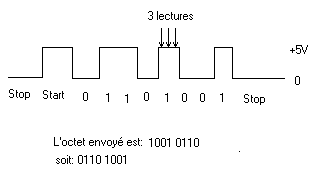

Le logiciel
Le logiciel est écrit en langage C. Pourquoi ce langage plutôt que l'assembleur ? Et bien par habitude et par goût. C'est un langage simple et structuré qui permet de programmer rapidement, en utilisant par exemple des fonctions déjà écrites pour des applications précédentes ou pour d'autres familles de µC.
Contrairement à ce que certains inconditionnels de l'assembleur peuvent penser, les compilateurs C génèrent un code optimisé et assez compact, à condition bien sûr de ne pas abuser des fonctions puissantes mais très gourmandes en mémoire telles que printf()... Si toutes les options de cette fonction ne sont pas nécessaires, il vaut mieux écrire une fonction de quelques lignes dont le rôle sera d'envoyer les caractères (ou les chaînes de caractères) par la liaison série. De cette manière, j'ai toujours réussi à loger mes routines dans la mémoire d'un composant. Quant à la rapidité d'exécution, je n'ai jamais eu à m'en plaindre !
J'ai cependant dû ajouter quelques lignes de code assembleur au programme :
- fcall 3FFh
- bsf 3,5
- movwf 15
Ces instructions permettent de calibrer l'horloge (IntRC) du PIC12C671 en chargeant le registre OSCCAL avec la valeur adéquate, qui est donnée par le constructeur sous la forme d'une instruction retlw XX à l'adresse 3FFh pour le PIC12C671. XX étant la valeur à placer dans OSCCAL.
Les lignes E/S GP0, GP1, GP2, GP4 et GP5 sont configurées en sortie. La ligne GP3 (IN) est toujours une entrée. La durée des impulsions de commande des servo-moteurs est initialisée à 1 ms. La durée entre les impulsions est d'environ 25 ms. Cette valeur n'est pas critique.
Après avoir initialisé le PIC et les variables, la fonction main() attend les caractères qui arrivent en série sur l'entrée IN et les traite au fur et à mesure. Les commandes reçues sont converties en unité de temps et stockées dans un buffer en RAM. Elles seront lues par la fonction d'interruption du Timer0 et chargées dans le registre TMR0, ce qui fixe la durée des impulsions.
Le PIC12C671 n'ayant pas d'UART, il faut simuler la ligne Rxd d'une liaison série, c'est-à-dire identifier le bit START et lire chacun des bits reçus en série. Pour lever le doute, le programme de lecture getch() effectue trois lectures du bit à 100 µS d'intervalle. Ainsi, par exemple, la lecture de « 1, 1, 0 » donne un « 1 » et « 0, 0, 1 » donne « 0 ». Comme il est dit plus haut, les octets reçus doivent être complémentés avant d'être passés en paramètre au programme principal.

Forme du signal série sur IN.
Attention, le bit « START » a un niveau 1 logique, le bit « STOP » un 0, et les bits reçus sont inversés.
Pour connecter le DCL639 à un µC équipé d'un UART (8051, PIC16C87x, 68HC11...), il convient d'inverser le signal transmis, ou d'attendre une version du DCL639 qui permettra une connexion directe.
Le fichier au format Intel HEX (dcl639.zip), une fois chargé par le programmateur, vous permettra de programmer un DCL639. À la programmation du PIC12C671, validez uniquement l'option « IntRC » (voir la page « Le composant » pour la programmation).
← Retour à l'accueil